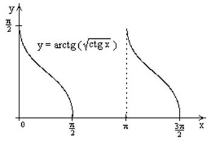

П19.1 №11
Исследуйте функцию и
постройте её график.
РЕШЕНИЕ:
1.Так как функция периодична с основным периодом , достаточно исследовать ее поведение
на промежутке, длиной равном периоду, например, на .
Арктангенс определен для всех значений аргумента, поэтому областью определения
сложной функции будут промежутки
оси  , на которых , т.е., для промежутка это будет . Для ,
область значений .
, на которых , т.е., для промежутка это будет . Для ,
область значений .
, на которых , т.е., для промежутка это будет . Для ,
область значений .Точки пересечения графика с координатными
осями: при  котангенс не определен,
точек пересечения с осью
котангенс не определен,
точек пересечения с осью  нет.
Точки пересечения с осью находим,
решая уравнение
нет.
Точки пересечения с осью находим,
решая уравнение  .
.
котангенс не определен,
точек пересечения с осью нет.
Точки пересечения с осью находим,
решая уравнение .2.Четностью или нечетностью функция не обладает.
3.Точка не является точкой
разрыва, так как не определена, . Поскольку на каждом периоде график  лежит в конечной области плоскости , асимптот у графика существовать не
может.
лежит в конечной области плоскости , асимптот у графика существовать не
может.
не является точкой
разрыва, так как не определена, . Поскольку на каждом периоде график лежит в конечной области плоскости , асимптот у графика существовать не
может.4.Найдем производную: . Для  ,
, т.е., на каждом отдельном
промежутке области определения функция монотонно убывает.
,
, т.е., на каждом отдельном
промежутке области определения функция монотонно убывает.
,
, т.е., на каждом отдельном
промежутке области определения функция монотонно убывает.5.Найдем вторую производную . Корень
уравнения  на - .
При
на - .
При  график
функции выпуклый вниз, при
график
функции выпуклый вниз, при  - график функции выпуклый вверх.
Точка графика - точка перегиба.
- график функции выпуклый вверх.
Точка графика - точка перегиба.
на - .
При график
функции выпуклый вниз, при - график функции выпуклый вверх.
Точка графика - точка перегиба.График имеет
вид
